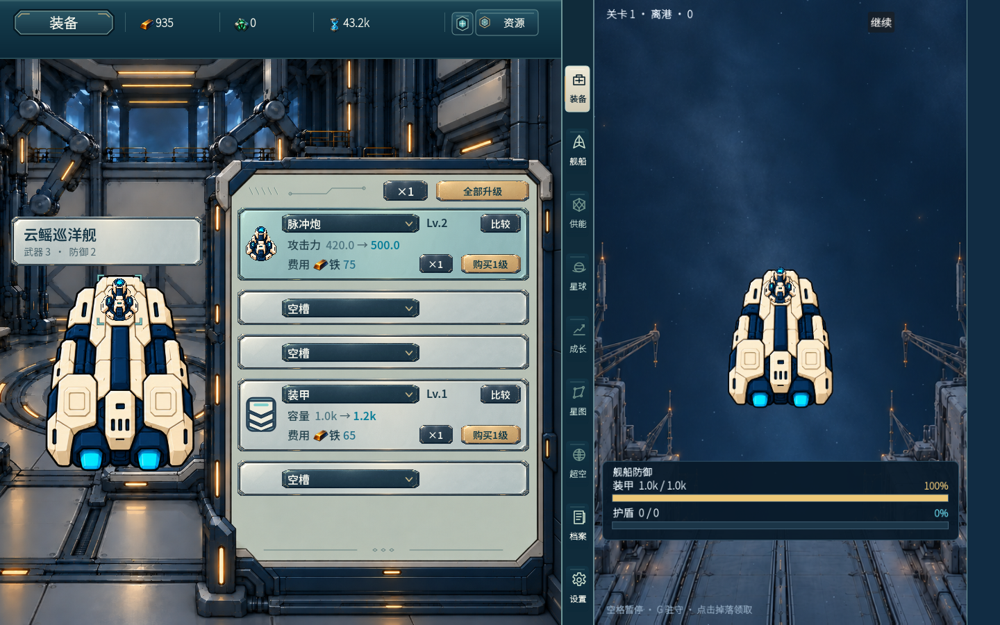
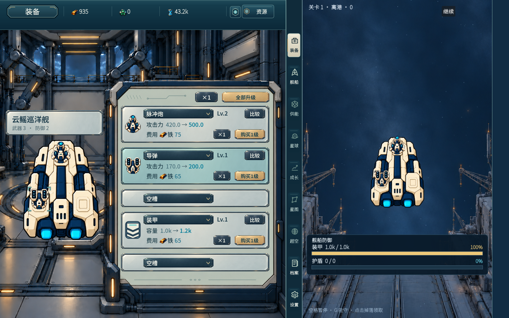
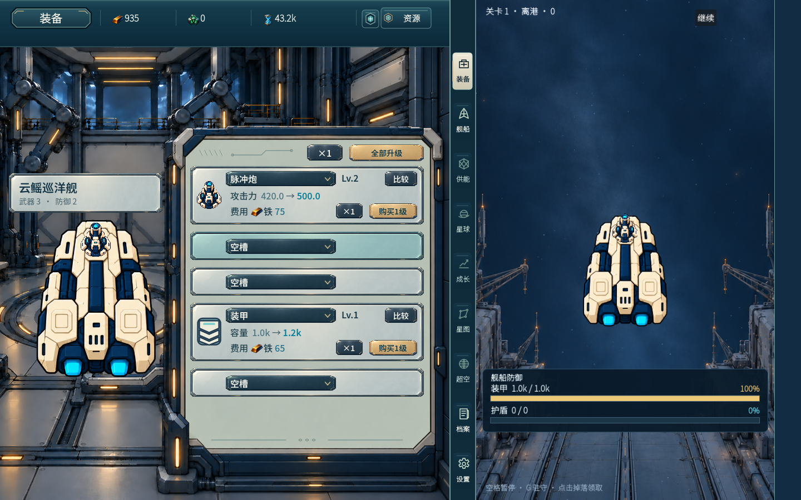
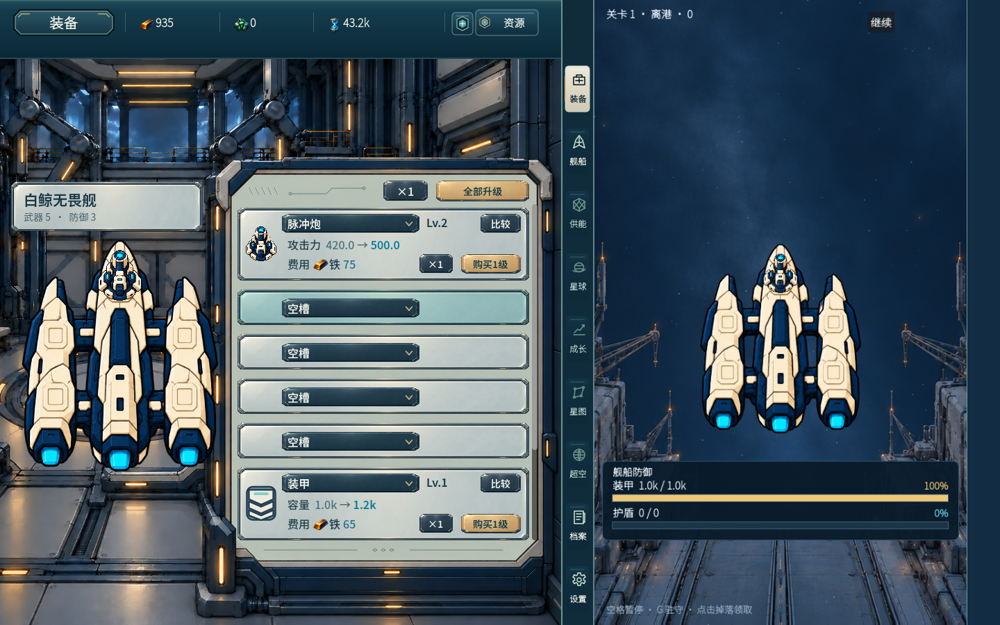

用户最终窄修：“空槽的时候上下等间距，完成后合入main，装备这轮就完事了”。固定源771295dc89d97aaed0152ed1cd89663a9e88810d，仅空槽selector按卡高/自身高居中并加当前R3材质2px光学校正，安装卡仍y10；505列表/滚动/玩法及错误保护保持，未修已撤回误判。
真实可见轮廓：首空槽卡中心列x500，内面像素y422..464，下拉绘制边y430..456，上方空面422..429八像素、下方457..464八像素。Rect为14/10，不能用Rect等距冒充材质等距；不缩放裁图只供观察边界，用户证据仍为四张完整1440x900原图。
作者同线程真实main/native/config最终0失败：中期真空槽、实际UI免费安装、实际Owner返回空槽（没有声称UI提供卸空选项）、晚期混合空槽。控件空→实恢复y10，实→空恢复光学校正位置，钱包不因换装扣费。受控进度，不作自然解锁证明；四图已逐张view。未重测性能；旧8fe证据不扩称当前新测。
当前交根/既有原审快速回读；用户main许可已明确，不另问用户。main预览e845ca58afd39184c3d4c5743021480e393adf74以e3b38d7b6d8256f6031e1b086c7db7812b6a441f为唯一父，47运行/消费资产文件，范围和边界在main-preview-files.json；尚未push main，不把预览当完成合入。不整条混合分支、不带历史诊断资料/import/uid/其它模块/native/config，原art工作树保全。



